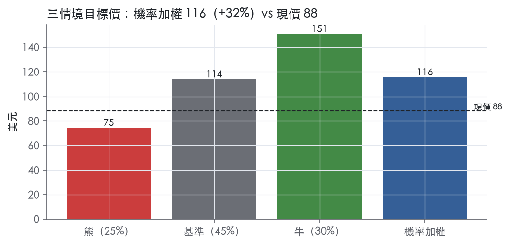
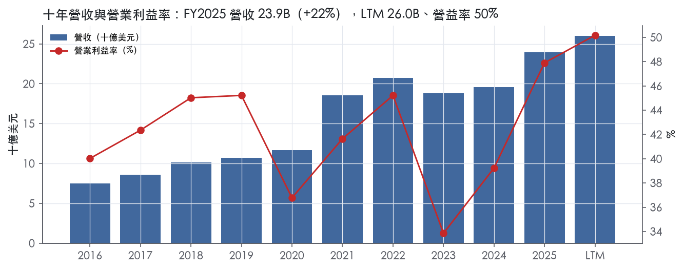
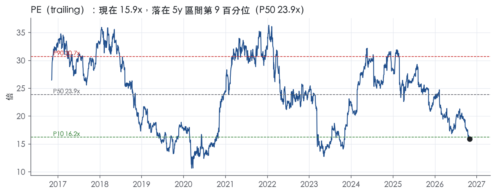
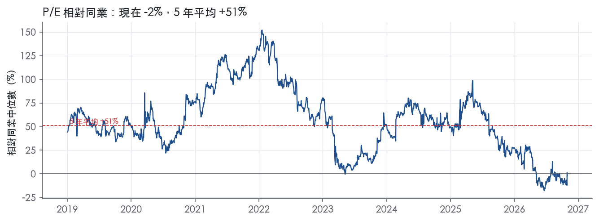
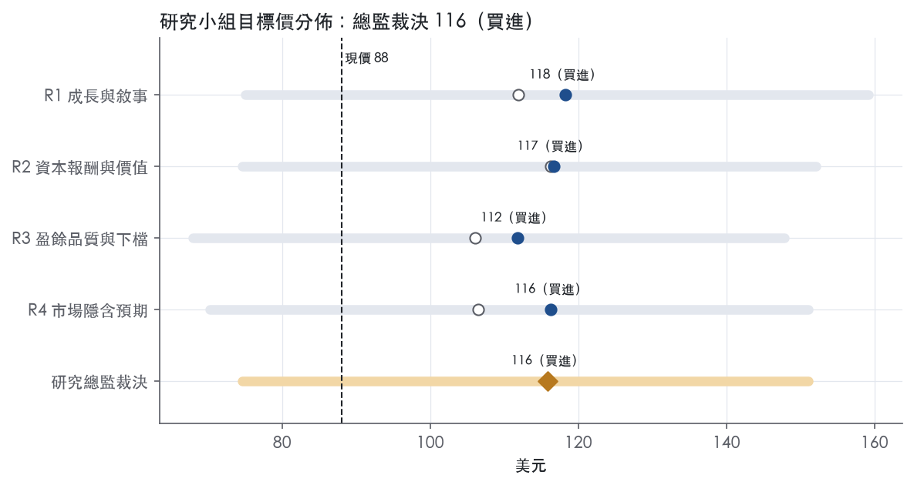
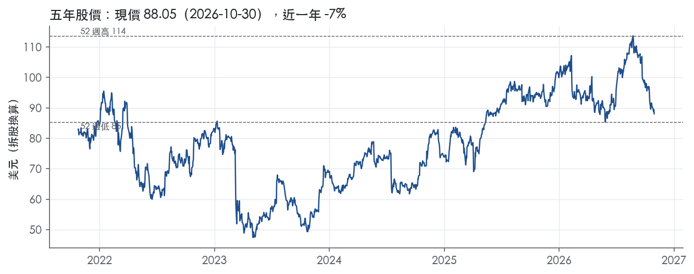

評等總表 › 金融 › SCHW
利差有撐、資本受限，16x 看多｜評等 買進｜目標價 116
| 報告日 | 評等 | 目標價 | 當時股價 | 超額報酬 |
|---|---|---|---|---|
| 2026-10-30 | 買進 | 116 | 88.05 | +23.0% |
| 評等 | 買進 |
| 12 個月目標價 | 116 美元 |
| 現價 | 88.05 美元（2026-10-30） |
| 預期報酬 | 股價 +31.6%＋股息 1.4%＝總報酬 +33.0%；同業籃門檻 10.0%，超額 +23.0% |
| 估值方法 | P/E 16.0x，套在第 5–8 季的EPS（也就是一年後的未來四季） |
| 三情境 | 熊 75／基準 114／牛 151 |
| 研究流程 | 四位研究員兩輪辯論＋研究總監裁決 |
| 資料來源 | SEC EDGAR XBRL、Tiingo、FRED（全免費） |
利差有撐、資本受限，16x 看多（研究總監裁決，四位研究員兩輪辯論後）
評等 買進｜12 個月目標價 116 美元（總監三情境機率加權 115 與研究員中位數 116 各半）｜現價 88.05（2026-10-30）
預期報酬：股價 +31.6%＋股息 1.4%＝總報酬 +33.0%。同業籃門檻 10.0%，超額 +23.0%。
估值方法：P/E 16.0x，套在第 5–8 季的EPS（也就是一年後的未來四季）。三情境：熊 75（25%）／基準 114（45%）／牛 151（30%）。
什麼會讓研究總監改變看法：4Q26 sweep 現金季減逾 15B 且 NIM 跌破 2.9%（假設門檻）轉中性、倍數退回 13.3x；GAAP Tier 1 槓桿回到 9% 以上且單季回購回到 1.5B（假設門檻）則撤回資本扣分、倍數上調至 P25 17x。
| 過去四季（實際，FY2026Q2） | 未來四季 | 第 5–8 季 | 第 9–12 季 | |
|---|---|---|---|---|
| 營收（B） | 26.0B | 29.4B | 31.8B | 33.7B |
| 營收成長 | 20.3% | 13.0% | 8.0% | 6.0% |
| 營業利益率 | 50.2% | 51.5% | 50.5% | 50.0% |
| EPS（美元） | 5.53 | 6.56 | 7.12 | 7.66 |
| EPS 成長 | 46.2% | 18.6% | 8.6% | 7.6% |
| 每股股息（美元） | 1.18 | 1.18 | 1.18 | 1.18 |
| P/E（現價） | 15.9x | 13.4x | 12.4x | 11.5x |
| 股息殖利率（現價） | 1.4% | 1.3% | 1.3% | 1.3% |
過去四季為申報數字；預測為研究總監的假設、程式計算。倍數與殖利率都用現價計算，用來看現價對應各期獲利的高低。
| 情境 | 機率（歷史） | 故事 | 未來四季營收成長 | 第 5–8 季營益率 | 倍數 | 目標價 | 股價漲跌 |
|---|---|---|---|---|---|---|---|
| 熊 | 25%（26%） | 本行下行路徑（2 年債 3.90、失業率 5.1、利差 2.30）：風險表第 1 條 NIM 壓縮、第 4 條放款信用成本，多空策略融資去槓桿；倍數取含 2023 的 10 年 trailing P10 | 7.0% | 42.0% | 15.0x | 75 | -15.3% |
| 基準 | 45%（43%） | 交易與融資正常化、營收降到個位數高段，費用 9% 使利潤率自 3Q26 高點小幅回落，回購受槓桿約束放緩，倍數由 13.3x 部分修復至 P10–P25 | 13.0% | 50.5% | 16.0x | 114 | 29.4% |
| 牛 | 30%（31%） | 總經同本行基準路徑（聯邦基金 4.38、2 年債 4.61），sweep 現金穩住、淨新增資產 ≥5.8%、營運槓桿延續，市場撤回 2023 定價，倍數回到帶 P50 附近 | 17.0% | 53.0% | 19.0x | 151 | 71.6% |
目標價由程式依研究總監的驅動與倍數計算；機率由研究總監給定。括號內是歷史頻率：把這檔股票過去十年 12 個月報酬的波動形狀，置中在基準情境，結果落在各情境附近的比例。

四位研究員用不同方法各自估值，回應研究總監的質疑後交出第二輪，最後由總監逐點裁決。各研究員的主張見第七章，裁決理由見第八章，完整論證見《研究底稿》。
| 立場（一輪→二輪） | 加權目標價（一輪→二輪） | 評等（一輪→二輪） | 第二輪倍數 | 熊～牛目標價 | |
|---|---|---|---|---|---|
| R1 成長與敘事 | 看多→看多 | 112→118 | 買進→買進 | 16.0x | 75～159 |
| R2 資本報酬與價值 | 看多→看多 | 116→117 | 買進→買進 | 17.0x | 75～152 |
| R3 盈餘品質與下檔 | 中性→看多 | 106→112 | 加碼→買進 | 16.0x | 68～148 |
| R4 市場隱含預期 | 看多→看多 | 106→116 | 加碼→買進 | 16.0x | 70～151 |
| 研究總監裁決 | 看多 | 116 | 買進 | 16.0x | 75～151 |
目標價由程式依各自的驅動與倍數計算；評等＝機率加權總報酬 − 同業籃門檻。
Schwab 是一家儲貸控股公司，透過子公司從事財富管理、證券經紀、銀行、資產管理、保管與財務顧問服務¹。截至 2025 年 12 月 31 日，Schwab 管理 11,900B 美元客戶資產，擁有 3,850 萬個活躍經紀帳戶、570 萬個職場退休計劃參與帳戶，以及 220 萬個銀行帳戶¹。公司本質上是一個「經紀＋銀行＋資產管理」三合一的平台型金融集團，靠龐大客戶資產規模賺取淨利息收入與各類費用。公司自己估計美國可投資財富規模超過 80,000B 美元，意味著目前的客戶資產規模仍有巨大成長空間¹。客戶主要分兩大類：個人投資者，以及服務這些投資者的獨立註冊投資顧問（RIA）。
Schwab 以兩個可報導分部經營：Investor Services（投資者服務）與 Advisor Services（顧問服務）¹。Investor Services 提供零售經紀、投資顧問、銀行與信託服務給個人投資者，並對企業與員工提供退休計劃及其他企業經紀服務¹；其下含 Retail Investor、Workplace Services（含 Retirement Plan Services、Retirement Business Services、Stock Plan Services、Designated Brokerage Services）、Mutual Fund Clearing Services 與 Off-Platform Sales 等業務單元¹。Advisor Services 則對獨立 RIA、獨立退休顧問與記錄保管機構提供保管、交易、銀行與信託及支援服務，Schwab 透過擔任保管機構賺取淨利息收入與資產管理及管理費，不向 RIA 或終端客戶收取保管費¹。兩分部各自的營收佔比與成長方向，10-K 未揭露。
公司最大的淨營收來源為淨利息收入、資產管理及管理費、交易收入與銀行存款帳戶費¹。淨利息收入是生息資產利息收入與資金成本之間的差額，主要資金來源是客戶未投資現金餘額¹。資產管理及管理費主要來自自家貨幣市場基金、自有與第三方共同基金及 ETF，以及收費型管理投資方案¹。交易收入包含股票、選擇權、期貨、固定收益及部分第三方基金的佣金，加上訂單流收入與固定收益自有交易收入¹。銀行存款帳戶費主要依據與 TD Bank 相關機構的保險存款帳戶協議產生，客戶經紀帳戶中未投資現金會被掃至資產負債表外的 TD 存款機構¹。從 3Q26 財報結構看，淨利息收入與資產管理費是最大兩項，交易收入第三，銀行存款帳戶費規模最小但成長最快。產品方面，公司提供經紀、共同基金、ETF、管理投資方案、另類投資、數位資產（加密貨幣 ETP、選擇權及期貨）、銀行貸款（房貸、HELOC、質押資產額度 PAL）與信託服務¹。2025 年 11 月公司宣布以約 660M 美元收購私募市場平台 Forge Global，交易於 2026 年 1 月經 Forge 股東核准，預計 2026 年 3 月完成，待監管核准¹。
客戶以美國個人投資者與獨立 RIA 為兩大主軸，並依資產規模分層服務。Retail Investor 服務從新手到高淨值客戶的全光譜個人投資者，提供 Schwab Stock Slices 與 Schwab Starter Kit 等入門產品，以及財務顧問、主動交易財務顧問、財富顧問等關係模式¹。針對高資產客戶，Schwab Private Client Services 服務 1M–10M 美元資產客群，Schwab Private Wealth Services 服務逾 10M 美元資產客群，提供專屬服務團隊與加速處理等差異化待遇¹。旗艦顧問方案 Schwab Wealth Advisory 提供專屬財富顧問搭配團隊，最低投資金額 5,000 美元起¹。Advisor Services 服務的是獨立 RIA，公司是全美最大的 RIA 保管、交易、銀行與支援服務提供商之一¹。通路上，公司以全通路（線上、行動、電話、分行）24/7 服務個人客戶，並以專屬網站與第三方平台整合服務 RIA¹。地區方面，10-K 揭露公司在英國、香港、新加坡、中國設有業務並受當地監管機構監督，但未揭露各地區營收佔比¹；整體仍是美國本土業務為主的公司。
2025Q3 至 2026Q3 四季營收與淨利持續雙位數成長，呈現加速趨勢。FY2025Q3 營收 6.13B 美元，年增 26.6%，營益率 49.2%（dv 相關欄位）。FY2025Q4 營收 6.34B 美元，年增 18.9%，營益率擴大至 50.2%。FY2026Q1 營收 6.48B 美元，年增 15.8%，EPS 1.37 美元。2Q26（截至 2026 年 6 月 30 日）淨營收達創紀錄的 7,072M 美元，年增 21%，GAAP 每股盈餘 1.54 美元創紀錄，調整後 1.62 美元，年增 42%²；公司並表示 6 月核心淨新增資產創紀錄達 62.7B 美元，年化成長率 5.8%²。3Q26（截至 2026 年 9 月 30 日）淨營收達創紀錄的 7,171M 美元，年增 17%，GAAP EPS 1.62 美元創紀錄，調整後 1.69 美元，年增 29%³；核心淨新增資產創紀錄達 190.4B 美元，年增 38%，年化成長率 5.8%³。3Q26 淨利息收益率季增至 3.04%，客戶交易型現金餘額升至 492.8B 美元，季增 7.1B 美元³。兩次新聞稿均未提供下一季具體財務指引數字，僅強調多元化業務模型與客戶參與度持續驅動成長。
公司策略稱為「Through Clients' Eyes」，強調以客戶視角優先，透過顛覆傳統業界做法與提供優質服務來打造更好的投資體驗¹。公司認為規模與成本效益、營運架構的多元化（經紀＋銀行＋資產管理）、品牌信任、服務文化與顛覆意願是六大關鍵競爭優勢¹。公司強調美國可投資財富市場超過 80,000B 美元，目前客戶資產規模留有顯著成長空間，信任關係的建立將帶動新舊客戶資產流入，進而驅動營收與獲利成長¹。近期新聞稿中管理層多次強調核心淨新增資產創紀錄、財富顧問淨流入強勁成長、質押資產額度（PAL）餘額大幅成長，以及推出 Charley AI 助理、與 Anthropic 合作將 Claude for Financial Advisors 引入 RIA 生態系等新產品投資³。整體看，Schwab 的成長引擎已從單純利差收入轉向「資產蒐集＋資產管理費＋交易活躍度」三輪驅動，AI 工具與加密貨幣交易是近兩季明顯加碼的新方向。公司淨利息收益率與 ROTCE 同步走高（達 46.0%），顯示規模效益正在兌現為盈利能力改善。Forge Global 併購案若順利在 2026 年 3 月完成，將補強私募市場投資能力，但短期對財報的實質貢獻需觀察整合進度。

Schwab 的護城河評為寬、趨勢穩定，依據是規模帶來的成本優勢，加上 RIA 保管與職場退休業務的轉換成本，兩者都難以在 10 年內被複製。這個評級帶一個明確的數字瑕疵：量化底稿的 ROE 超額報酬偏薄，而且有一年跌破資本成本，下文照實處理。
成本優勢是最核心的一項，證據來自公司揭露的規模與營運效率。10-K 寫明，公司身為美國最大的投資服務公司之一，能把營運成本與新投資攤提在龐大的客戶基礎上¹。10-K 也寫明，規模加上跨業務共用基礎設施形成成本優勢，讓公司能以具競爭力的價格，在多通路上獲利地服務各種規模的客戶¹。效率比從 62.0%降到 48.1%，說明營收增加時費用沒有同步擴張，規模經濟確實在發生作用。
轉換成本主要集中在 Advisor Services 與 Workplace Services。RIA 透過 Schwab 網站處理開戶、資金移轉、資產轉移、交易，並使用多年的對帳單、成交確認與稅務報表封存¹。Schwab 還提供 CRM、投資組合管理、交易委託管理等第三方平台整合，另有免費的 Schwab Advisor Portfolio Connect、thinkpipes 與 iRebal¹。RIA 的日常作業流程與客戶帳戶都綁在這套系統上，換保管機構等於整批搬遷客戶帳戶，這就是轉換成本的來源。Retirement Plan Services 提供受託或保管服務，以及參與者層級的記錄保管¹。企業的 401(k) 記錄保管一旦導入就很少更換，客戶黏性高。10-K 也指出，在經紀客戶之外加上銀行、財富與資產管理服務，可以加深關係並提高客戶資產的穩定度¹。
無形資產這一項以品牌為主。10-K 寫明，在仰賴信任的產業裡，Schwab 的聲譽與品牌能吸引客戶與員工，也讓新產品推出時具有可信度¹。
網路效應與效率規模沒有足夠證據，本章不列入。
數字大致支持寬護城河，但超額報酬的幅度比典型的寬護城河公司薄。資料包的 ROIC 欄不適用於券商兼銀行的資產負債表，FY2019 出現 -1322.9%，因此本章改用量化底稿的 ROE 檢驗。
ROE 十年平均 14.2%，資本成本代理值 10.0%，兩者差距 4.2%。有資料的 9 年中，ROE 有 8 年高於資本成本。長期持續的超額報酬符合寬護城河的方向。
利潤率的穩定度是最有力的證據。稅前利益率十年平均 41.7%、標準差 4.1%，區間落在 33.9% 到 47.9%。即使在最差的 FY2023，營益率仍有 33.9%。一家在利率週期中最低點仍維持三成以上利潤率的公司，競爭地位不太可能薄弱。
以下是與寬評級衝突的三點：
仍維持寬評級的理由有三：
最大的侵蝕風險是利差收入的結構，而不是同業搶客。10-K 寫明，淨利息收入的主要資金來源是留在資產負債表上的客戶未投資現金¹。如果客戶持續把現金移往高收益產品，或利率長期下行，ROE 可能再度跌破資本成本；前述 ROE 最低 8.5%就是這種壓力的樣本。
監管升級會壓縮資本回報。10-K 寫明，四季平均總資產達 700B 美元以上將進入 Category II¹。截至 2025 年底，CSC 的總資產約 491B 美元¹。Category II 機構不得把 AOCI 排除在監管資本之外，風險加權資產的計算要求也更多¹。規模優勢越大，越接近這個門檻，成本優勢的一部分會轉為資本負擔。
競爭面的威脅來自金融科技公司。10-K 列出的對手包括 fintech 公司與 fintech 保管機構¹。零佣金已經是業界常態，價格不再能拉開差距；如果 RIA 端的整合工具被第三方平台通用化，轉換成本就會變薄。
銀行存款帳戶費依賴與 TD 存款機構的 2023 IDA 協議¹。協議條款一旦改變，會直接影響這項收入，但這屬於合約風險，與護城河本身無關。
目標倍數相對經紀與區域銀行同業應給予溢價，理由是成本優勢與 RIA 轉換成本讓有形資本回報可以長期維持高於資本成本。溢價幅度應保守，因為 ROE 相對資本成本只有 4.2% 的平均超額，且有一年跌破，利率敏感度高。目前 P/E 15.9x 位於五年分位 9.2%，估值研究員不宜直接回推到 5 年中位數 23.9x，應先扣除利率下行情境對淨利息收入的折價。
| 指標 | 最新 | 十年平均 | 標準差 | 最低 | 最高 |
|---|---|---|---|---|---|
| ROIC | 31.5% | -125.7% | 423.3% | -1322.9% | 31.5% |
| 營業利益率 | 47.9% | 41.7% | 4.1% | 33.9% | 47.9% |
| FCF 利潤率 | 36.6% | 43.9% | 41.8% | -14.4% | 117.3% |
| ROE | 18.1% | 14.2% | 3.2% | 8.5% | 18.1% |
程式計算。資本成本代理值（10 年債＋5%）：10.0%；ROIC 平均減資本成本：-135.7%；ROIC 有資料的 9 年中，高於資本成本 8 年。
Schwab 2025 年 GAAP 淨利 8.85B、CFO 9.31B，現金對盈餘的覆蓋率約 1.05 倍，FY2025 FCF 8.76B（is/cf 年度表 FY2025）。盈餘品質計分表三項指標中兩項綠燈、一項黃燈，沒有紅燈，且黃燈可用「客戶资金/放款成長吃掉現金」解釋，不是盈餘灌水的證據。3Q26 GAAP EPS 1.62、年增 29%，adjusted EPS 1.69，GAAP 與調整後差距僅來自 Forge 併購相關費用，差距不大，顯示盈餘品質穩定³。
LTM（至 FY2026Q2）FCF 10.79B，而 LTM GAAP EPS 5.53（換算淨利規模與 FY2025 的 8.85B 相比明顯墊高），現金仍能覆蓋盈餘成長【判，依資料包 LTM 欄位 、】。但把八個季度攤開看，CFO 在 FY2024Q4、FY2025Q4、FY2025Q3 都轉負或接近零（-10.83B、-0.76B、0.54B），屬於銀行型現金流的季節性特徵，第四季客戶年底現金流入推高存款負債、資金用於放款與證券投資，不是現金品質惡化（資料包近八季表）。年度層次看更清楚：FY2024 CFO 2.67B 遠低於淨利 5.94B（現金/盈餘約 0.45 倍），FY2023 CFO 19.59B 又遠高於淨利 5.07B（約 3.9 倍）（資料包年度表 FY2023、FY2024），這種大幅波動主因是銀行補充性融資（brokered CDs、FHLB 借款）去化與客戶現金重新配置的時間差，MD&A 明確指出 2023-2024 年「bank supplemental funding」大幅縮減且來自 AFS/HTM 證券本金與利息回收，屬於資產負債表科目間的資金移動，不是核心盈餘的現金轉換出問題⁴。整體結論：核心盈餘背後有真實現金支撐，但傳統「CFO/淨利」比率對銀行控股公司不是乾淨的品質指標，應優先看淨利息收入、信用成本與資本比率。
3Q26 GAAP 淨利 2.906B、調整後 3.021B，差額 151M 全部是「transaction-related costs」，即 Forge 併購交易相關費用與收購無形資產攤銷³。年度層次，FY2025 adjusted diluted EPS 4.87 對比 GAAP 4.65，差距主要是收購整合相關費用與無形資產攤銷，FY2025 之前（FY2023-2024）這塊費用規模更大、FY2024 僅 645M，較 FY2023 大減 55%，因為 Ameritrade 整合在 2024 年底已完成（10-K 明確指出「substantially all of the Company's costs related to its restructuring were incurred in 2023」）⁴。FDIC 特別評估費用則是真正一次性項目：2023 認列 172M、2024 追加 30M、2025 反向沖回 32M⁴。我方判斷：收購整合費用與無形資產攤銷屬於真實現金支出但非常態性，可以在估值中加回；FDIC 特別評估的沖回則是會計估計調整，金額小、不影響結論。adjusted Tier 1 槓桿比率（7.0%-7.1%）與 GAAP 版（8.9%-9.3%）的落差主要來自 AOCI（未實現證券損益）排除與否，這是監管口徑差異，不是盈餘品質問題⁴。
槓桿方向正在走弱但仍在可控範圍，GAAP Tier 1 Leverage Ratio 從 FY2024 的 9.9% 降到 FY2025 的 9.3%，3Q26 preliminary 再降到 8.9%⁴。這主要是放款與保證金貸款快速成長所致：margin loan 餘額年底 112.3B（+34% YoY），3Q26 進一步衝到 187.9B（QoQ +14%，含 60.7B 長短倉策略）⁴，銀行放款餘額同步成長 28%（FY2025）與 35%（3Q26 YoY）⁴。股東回饋方面，2025 年回購 7.3B 股票、股利調升 8% 至每股 0.27、並贖回 2.5B 優先股⁴，但 3Q26 回購速度明顯放緩至僅 0.5B（470 萬股）³，與槓桿比率同步下降的方向一致，顯示公司在 Forge 併購與放款成長期優先保留資本。稀釋股數十年平均成長 3.9%、但近三年與 LTM 都轉負（-1.5%、-0.7%），回購確實在淨減少股數，不是靠發股灌水 EPS。
計分表沒有紅燈，只有一項黃燈需要回應：（股利＋回購）／淨利 LTM 23.8%，低於綠燈門檻 50%，但近三年平均 82.9%、十年平均 58.6% 都在綠燈區。判斷：這不是股東回饋意願轉弱的訊號，而是 LTM 分母（淨利）因 2025-2026 年獲利爆發式成長（GAAP EPS 年增 56%、3Q26 再增 29%）快速墊高，而回購金額同期反而因 Forge 併購與槓桿比率下滑而主動收斂（3Q26 僅 0.5B），造成比率短期被壓低，屬於分子分母成長速度不同步的技術性現象，不是現金枯竭或資本緊張的警訊【判，依 10-K FY2025 Item 7、8-K 2026-10-15】。槓桿比率下滑（9.9%→9.3%→preliminary 8.9%）本身也值得追蹤但不構成紅旗：adjusted Tier 1 槓桿比率反而從 6.8% 升到 7.1%（FY2024→FY2025），顯示扣除 AOCI 影響後的核心資本其實在增厚，槓桿比率下滑主要是資產面（放款、保證金貸款）快速擴張的分母效應，不是資本被掏空⁴。CFO 季度波動（部分季度轉負）已在「現金有沒有跟上盈餘」一節說明，為銀行型資產負債表科目移動所致，非紅旗。
估值應以 GAAP 淨利為主軸，adjusted EPS 的加回項目（併購整合費用、無形資產攤銷）金額不大且方向合理，可小幅參考但不必整碗端走，盈餘不需要大幅打折。槓桿比率下行與回購放緩是因為資本正被導向放款與保證金貸款的有機成長以及 Forge 併購，不是財務體質惡化，不應限制估值倍數，但若 Tier 1 槓桿比率持續跌破 8.5-9% 這一近年區間，需要重新檢視資本緩衝對回購步調與倍數的壓制。目前 P/E 15.9x 處於近五年 9.2% 分位，顯著低於十年中位數 24.5x，盈餘品質沒有明顯瑕疵支持這麼大的折價，估值研究員可以把目前的低分位視為機會而非盈餘風險的合理反映【判，資料包 band.pe】。
| 項目 | LTM | 近三年 | 十年 | 燈號 | 規則 |
|---|---|---|---|---|---|
| SBC／營收 | 1.3% | 1.6% | 1.7% | 綠 | ≤3.0% 綠、>8.0% 紅 |
| 稀釋股數年變動 | -0.7% | -1.5% | 3.9% | 綠 | ≤0.0% 綠、>3.0% 紅 |
| （股利＋回購）／淨利 | 23.8% | 82.9% | 58.6% | 黃 | ≥50.0% 綠、<0.0% 紅 |
程式計算；燈號以 LTM（無則近三年平均）判定。
| 風險 | 觸發指標（看什麼數字、在哪裡看） | 對 EPS 的影響方向與粗略幅度 | 未來 12 個月發生機率（高／中／低） | 出處 |
|---|---|---|---|---|
| 1. 利率下行壓縮淨利息收入 | Fed funds（3.75）、ust10y/ust2y、每季 NIM／nii_to_assets（dv.nii_to_assets） | 負向，大；NII 是公司最大單一收入來源¹ | 高 | ¹＋ |
| 2. 客戶現金分流（sweep cash 轉出至貨幣基金／高息產品） | 季度 client transactional sweep cash balance（3Q26 為 492.8B，季增 7.1B）、資產配置決策揭露 | 負向，中～大；現金分流會縮小銀行可用資金規模，進而壓低 NII | 中 | 8-K 財報新聞稿（2026-10-15） |
| 3. 資本監管分級上調（Category III→II） | 總合併資產（2025 年底約 491B，門檻 700B）、跨境活動（約 31B，門檻 75B） | 負向，中；一旦升級須納入 AOCI 入監管資本、適用更嚴格流動性與資本要求，壓抬資本成本與限制回購空間 | 中 | 10-K 年報 FY2025 Item 1（業務） |
| 4. 銀行放款快速擴張下的信用風險 | 季度放款餘額（3Q26 bank loan balances 72.3B，年增 35%）、信用成本率／淨沖銷率（資料包目前多為缺值，須留意揭露） | 負向，中；放款基數擴大但目前信用成本數據未揭露，一旦出現提列跳升，拖累淨利 | 中 | ³＋ |
| 5. TD Depository Institutions 存款協議依賴 | 2023 IDA 協議續約／修訂公告、銀行存款帳戶費季度變動 | 負向，小～中；此收入線完全依賴單一第三方協議安排 | 低 | 10-K 年報 FY2025 Item 1（業務） |
風險一：利率敏感度是最大的盈餘波動來源。 淨利息收入是 Schwab 最大的淨收入來源，來自生息資產利息收入與資金成本的差額，主要資金來源是客戶未投資現金餘額¹。3Q26 淨利息收益率季增至 3.04%、平均生息資產 451.5B 美元、年增 8%³，顯示公司近兩年受惠於高利率環境，淨利息收入逐季墊高（dv.nii_to_assets 由 FY2024Q3 的 1.9% 升至 FY2026Q2 的 2.7%）。目前 Fed funds 為 3.75%、10 年期公債殖利率 4.98%、2 年期 4.61%，若聯準會啟動降息循環，資產端重定價速度通常快於負債端的客戶現金，NII 將首先受壓。這條風險可直接監測：每季財報揭露的 NIM 與平均生息資產即是先行指標。
風險二：客戶現金分流削弱銀行資金基礎。 3Q26 新聞稿明確指出，客戶交易型 sweep 現金餘額季增 7.1B 美元至 492.8B 美元，反映 long/short 策略需求與自然成長，但「部分被客戶資產配置決策抵消」³。這句話等於承認公司正同時面對資金流入與流出兩種力量，若利率環境使貨幣市場基金相對 sweep 帳戶利差擴大，客戶轉出速度可能加快，減少銀行可投資資金規模，進一步壓縮 NII。監測方式是每季揭露的 sweep cash balance 環比變化方向與幅度。
風險三：資本分級一旦上調，監管成本立即跳升。 公司目前適用 Category III banking organization 規則，總合併資產介於 250B 至 700B 美元之間，跨境活動低於 75B 美元¹。截至 2025 年底，CSC 總合併資產約 491B 美元、跨境活動約 31B 美元¹。若四季平均總資產達到 700B 美元或跨境活動達到 75B 美元，公司將升級至 Category II，須完整納入 AOCI 計入監管資本、適用更嚴格的風險加權資產計算方式¹。Schwab 近年資產負債表規模隨客戶資產與存款快速擴張（總客戶資產 FY2025 底 11.90 萬億美元，3Q26 已達 13.33 萬億美元¹、³），資產基數上升軌跡使這條門檻值得每季追蹤。
風險四：放款規模快速膨脹但信用成本能見度低。 3Q26 銀行放款餘額達 72.3B 美元，年增 35%，為近幾季最快的放款成長速度之一³。資料包中信用成本率與淨沖銷率多季缺值（dv.credit_cost、dv.nco_rate 顯示「—」），代表目前揭露尚未呈現明顯信用壓力，但放款基數擴大本身即放大未來提列波動的絕對金額。若總體信用環境轉弱，備抵覆蓋率（目前僅 FY2024Q4 揭露 0.0%、FY2025Q4 揭露 0.1%）需重新評估是否足夠。
風險五：銀行存款帳戶費集中於單一第三方協議。 公司銀行存款帳戶費主要依據與 TD Bank USA 及 TD Bank（合稱 TD Depository Institutions）簽訂的「2023 IDA agreement」，客戶經紀帳戶中未投資現金被掃至資產負債表外的 TD 存款機構，Schwab 為此提供記錄保管與支援服務以賺取費用¹。這條收入線的持續性完全取決於單一協議的存續與條款，一旦協議到期未能續約或條款不利變更，將直接衝擊這塊費用收入。
Forge Global 收購案（約 660M 美元，預計 2026 年 3 月完成，仍待監管核准¹）存在交易延遲或未通過監管核准的執行風險，雖然金額相對公司市值（153.12B）不大，但若延遲完成或整合不順，將牽動管理層對私募市場布局的敘事與相關一次性整合費用（3Q26 已認列 151M 美元收購及整合相關費用³）。
目前股價對應 trailing P/E 15.9x，位於過去五年分位僅 9.2%，遠低於 5 年中位數 23.9x 與 10 年中位數 24.5x，顯示市場已對利率下行周期的 NII 風險給出相當保守的定價，但若降息速度超預期，倍數可能進一步收斂而非回升，這點 10-K 未揭露但評價層面需持續追蹤。
現價 88.05 對應 trailing（過去四季）P/E 15.9x、EV/EBITDA —、EV/EBITA 10.0x、EV/Sales 5.2x、FCF 殖利率 7.0%。主要估值倍數 P/E 現在 15.9x，落在5 年區間第 9 百分位（P10／P50／P90 = 16.2x／23.9x／30.7x）。

把程式的機械基準預測放到現價下，市場付的前瞻倍數是：P/E（未來四季） 13.3x、P/E（第 5–8 季） 11.5x。反推 DCF 顯示市價隱含未來五年營收年成長 -2.1%（WACC 9.0%、終值成長 3.0%、FCF 利潤率 40.6%，SBC 不加回）。
| 倍數 | 現在 | 5 年 P10 | 5 年 P50 | 5 年 P90 | 現在分位 | 全期 P50 |
|---|---|---|---|---|---|---|
| P/E | 15.9x | 16.2x | 23.9x | 30.7x | 9.2% | 24.5x |
| EV/EBITDA | 6.1x | — | — | — | — | 8.3x |
| EV/EBITA | 10.0x | 7.8x | 13.9x | 19.1x | 17.4% | 13.0x |
| EV/EBIT | 10.4x | 8.4x | 14.9x | 20.7x | 16.8% | 13.8x |
| EV/Sales | 5.2x | 3.6x | 6.2x | 7.6x | 24.1% | 6.2x |
| P/S | 5.9x | 5.1x | 7.2x | 8.2x | 16.5% | 7.2x |
| P/FCF | 14.2x | 7.1x | 16.6x | 90.7x | 35.7% | 16.6x |
trailing 倍數（股價 ÷ 過去四季）；分位以每個交易日計算。
同業籃：IBKR, HOOD, RJF, LPLA, MS（手動名單（playbooks/peers.yaml））。評等門檻 10.0%：同業「倍數不變下持有一年」的隱含報酬中位數（＝ FCF 殖利率 ×(1＋g)＋g，g 為 5 年營收年複合成長並夾在 −2%～8%），每家夾在 0～15%、P/E 低於 5 倍視為資料可疑而排除，中位數再限制在 10 年債到 10 年債＋5% 之間（同業原始中位數 14.7%）。
| 代號 | 市值 | 5 年營收 CAGR | 營益率 | ROIC | P/E | 5 年 P/E 中位數 | EV/EBITDA | P/FCF | 隱含報酬 |
|---|---|---|---|---|---|---|---|---|---|
| SCHW | 153.1B | 15.4% | 50.2% | 31.5% | 15.9x | 23.9x | — | 14.2x | 14.8% |
| IBKR | 34.6B | 13.6% | 196.3% | — | 16.8x | 11.8x | — | — | 14.4% |
| HOOD | 77.4B | 36.1% | 47.3% | — | 39.2x | — | 29.7x | — | 10.8% |
| RJF | 30.2B | 14.3% | — | — | 13.7x | 14.8x | — | 20.9x | 15.9% |
| LPLA | 22.4B | 23.7% | 9.2% | 9.1% | 16.2x | 25.5x | 12.5x | 22.2x | 14.7% |
| MS | 289.7B | 7.7% | 33.5% | 5.4% | 14.8x | 15.4x | 16.8x | — | 15.0% |
| 同業中位數 | 14.3% | 40.4% | 7.3% | 16.2x | 15.1x | 16.8x | 21.6x | 10.0% |
全部 trailing，程式以各公司 SEC XBRL 與 Tiingo 行情計算；第一列為本檔。
P/E 相對同業中位數：現在 -1.8%，過去 1 年平均 7.6%、3 年 40.7%、5 年 51.3%。

事後實現前瞻倍數帶（P/E，2018-08-17..2025-08-15）：P10／P50／P90 = 15.2x／19.3x／24.4x。它是每個交易日的股價除以之後四季實際實現的指標；一年後，今天的第 5–8 季正是那時的未來四季，所以這條帶是 12 個月目標價的同口徑倍數。因為用的是事後實際而非當時預期，過去成長超乎預期的公司這條帶會偏低。
程式的機械基準（成長率從過去四季年增率三年收斂到 6%、利潤率持平）用 事後實現前瞻 P/E P50 估值得到 148（67.7%），市場現行前瞻倍數（現價 ÷ 基準 未來四季指標）一年後持平，套在基準 第 5–8 季指標得到 102。這兩個數字只是參考點，不是本報告的目標價；研究員對這個定價的回應在第七章。
下表是每位研究員第一輪（各自獨立）與第二輪（回應研究總監的質疑後）的結果。目標價全由程式依各自的假設計算。
| 立場（一輪→二輪） | 加權目標價（一輪→二輪） | 評等（一輪→二輪） | 第二輪倍數 | 熊～牛目標價 | |
|---|---|---|---|---|---|
| R1 成長與敘事 | 看多→看多 | 112→118 | 買進→買進 | 16.0x | 75～159 |
| R2 資本報酬與價值 | 看多→看多 | 116→117 | 買進→買進 | 17.0x | 75～152 |
| R3 盈餘品質與下檔 | 中性→看多 | 106→112 | 加碼→買進 | 16.0x | 68～148 |
| R4 市場隱含預期 | 看多→看多 | 106→116 | 加碼→買進 | 16.0x | 70～151 |
| 研究總監裁決 | 看多 | 116 | 買進 | 16.0x | 75～151 |
目標價由程式依各自的驅動與倍數計算；評等＝機率加權總報酬 − 同業籃門檻。
分歧度：第一輪 加權目標價 106～116（區間＝現價的 12%）· 倍數 14.5～17x · 立場 看多×3、中性×1；第二輪 加權目標價 112～118（區間＝現價的 7%）· 倍數 16～17x · 立場 看多×4（方向一致）。

| 研究員 | 第二輪主張 | 堅持的理由 |
|---|---|---|
| R1 成長與敘事 | 看多，16x；利潤率持平微降，股數每年減 3.5%。 | 回購會回到 2025 年步調，有機資產成長年化 5.8% 撐住看多。 |
| R2 資本報酬與價值 | 看多，17x，接近過去市場付價的低四分位。 | 峰值折價只在倍數扣一次，利潤率照證據持平在 50.2%。 |
| R3 盈餘品質與下檔 | 由中性改看多，16x；利潤率逐年退到 48.5%。 | 十年來沒有一年利潤率站上五成，費用增速會超過營收。 |
| R4 市場隱含預期 | 看多，16x；市場付 13.3x，是在定價利差回落。 | 熊情境倍數壓到 12x，因為股價對 2 年債敏感，交易週期會反轉。 |
每位研究員的逐條回應與完整論證見《研究底稿》（SCHW_研究底稿_2026-11-01.docx）。
| 分歧點 | R1 | R2 | R3 | R4 | 什麼資料會分出勝負 |
|---|---|---|---|---|---|
| Q5–Q8 營益率（op_margin_y2） | 51.5% | 50.2% | 49.5% | 51.5% | 4Q26–2Q27 費用年增是否高於營收年增；2Q27 單季稅前利益率是否守住 50% |
| 目標倍數 | 16x | 17x（P25） | 16x | 16x | 4Q26 回購金額與 GAAP Tier 1 槓桿 8.9% 是否止跌；止跌才有 P25 |
| 熊情境倍數與盈餘路徑 | 13x；營收 4／3% | 15x；營收 7／−2%，營益率 42% | 15x；營收 −3／0% | 12x；營收 8／2% | 本行下行路徑是否出現；4Q26 日均交易量年增、NIM 季變動；含 2023 的 trailing 帶 P10 |
| 股數年變動 | −3.5% | −2.0% | −2.5% | −2.5% | 4Q26 單季回購是否回到 1B 以上；調整後 Tier 1 槓桿 7.0% 的走向 |
| NTM 營收成長 | 13% | 12% | 12% | 14% | 1Q27 淨營收年增（3Q26 的 17% 已入窗，4Q25 基期 +18.9%） |
營益率：y1 取 R3 的 51.5%，y2 自訂 50.5%、y3 50.0%（own，假設）。 3Q26 稅前利益率 52.7%、前九月 51.3%³已落在 NTM 窗內，且本行基準聯邦基金 4.38 整年不降，淨利息收入有撐，所以 y1 高於 LTM 的 50.2%；R1／R4 的 52% 假設 3Q26 水準一路延續，忽略 1Q26 只有 49.2%的季節性，而兩人的營業利益預測紀錄分別偏高 +2.6%／+1.8%。y2 的機制是費用：3Q26 費用年增 9% 對營收 17%³，營收降到 8% 而費用增速不降，利潤率必然回落，R1／R4 的 51.5% 等於假設費用同步減速，無證據；R3 的 49.5% 隱含費用增速遠高於 9%，但前九月費用 10,091M 對 9,306M³看不出這種加速，他唯一的依據（2Q26 單季費用）只有一季；R2 的 50.2% 是機械持平、沒有機制，而他的營業利益紀錄勝過基準只有 55%。十年沒有一年超過 47.9%的基準率，我放進倍數與熊情境，不在驅動裡扣第二次。
目標倍數：取 R3 的 16x@q5_q8。 錨在事後實現前瞻帶 P10 15.2x 與 P25 16.9x 之間，扣分只有兩項個股因素：資本約束（GAAP Tier 1 槓桿 9.9%→9.3%→8.9%、3Q26 回購 0.5B⁴）與盈餘資產負債表化（保證金貸款 187.9B 含 60.7B 多空策略、放款年增 35%³）。R2 的 17x 理由是「峰值折價只在倍數扣」，但他的 y2 營益率 50.2% 已從 52.7% 回落，驅動裡其實也扣了，P25 建立在一個不成立的分工上；他也沒看到風險章的資本分級與放款資料。不取 P50 19.3x 的個股理由：帶的 P50 含 2022 年段（股價對應之後下滑的 FY2023 盈餘，劇本已註明衰退期帶偏高），而相對同業溢價已從五年 51.3% 收到 −1.8%，支撐溢價的輕資本加大額回購現在都變弱。R1 保留「帶的期間利率較低」當折價理由，不採：現價與門檻已反映利率。
熊情境：倍數取 R2／R3 的 15x，盈餘路徑取 R2。 含 2020、2023 的 10 年 trailing P10 是 15.0x，2023 年 EPS 由 3.50 降到 2.54時倍數反而擴張；R1 的 13x 與 R4 的 12x 讓盈餘與倍數同時落底，歷史沒有樣本，R4 拿 2 年債敏感度當倍數理由，但那是盈餘管道。R3 的 y1 −3% 要求 4Q26–2Q27 接近 2023 年的 −9.3%，可是本行下行路徑的聯邦基金 3.88 仍高於現在的 3.75，沒有 2023 式 500bp 升息造成的分流；R4 的 8／2%、46% 則看不到 72.3B 放款（年增 35%）在失業率 5.1 下的信用成本。R2 的 7／−2／3%、47／42／42%、股數 −1% 對應風險表第 1 條（利差壓縮）與第 4 條（放款信用成本）；第 2 條現金分流屬升息路徑，留在基準的監測項。
股數：取 R3／R4 的 −2.5%。 R1 的 −3.5% 需要回購重回 2025 年 7.3B 的步調，8.9% 的槓桿不允許；R2 的 −2.0% 把 3Q26 單季 0.5B 當常態，但只有一季樣本，調整後 Tier 1 槓桿 7.0% 顯示底層資本未緊（R4 自己也承認），2025 年證明槓桿允許時回購會回來。
NTM 營收：取 R1 的 13%。 3Q26 +17% 已入窗，4Q25 基期 +18.9%轉硬，日均交易量 10.7M、年增 44% 是活躍度高點，R4 的 14% 要求高點不退；R2／R3 的 12% 偏低——四位研究員與我在營收上的紀錄都偏低 0.4–0.7%，NIM 3.04% 仍在擴張，聯邦基金走向 4.38 對資產敏感型有利。
漂移與總經偏離。 R3 向中位數靠攏 97%，但五條接受意見全附證據、全是回應我的 Q1–Q4：Q2 使他下修利潤率（遠離中位數），Q3／Q4 使倍數上調（靠近），這是拆掉重複折價的結果，不退回；R4 的 14.5x→16x 同理，R1 遠離中位數，R2 幾乎未動，drift_rejections 為空。總經偏離四人皆未申報；R4 以本行基準利率路徑（而非上行路徑，2 年債 4.30 對資產敏感型不利）當牛情境的處理正確，我採同法，熊情境用下行路徑。無人以利率把倍數壓到市場持平 13.3x 之下，R1 的利率折價理由已在倍數段駁回。
市場對基準 NTM EPS 6.60 付 13.3x，低於前瞻帶 P10 15.2x，等於定價盈餘見頂回落。差距主要在倍數（16x 對市場持平 13.3x），其次在盈餘：我們的 Q5–Q8 EPS 低於機械基準（營收 13／8%、股數 −2.5% 都比基準保守），但高於市場隱含的回落；關鍵驅動是淨利息收入在聯邦基金 4.38 不降下的持續性（利息費用前九月 2,604M 對 2,922M、NIM 3.04%³）與 sweep 現金未分流（492.8B、季增 7.1B）。立場看多；本裁決的假設落在 R3（超額 +18.3%，買進）與 R4（+23.5%，買進）之間，評等與立場一致。
現價 88.05 → 點估目標價 114 → 機率加權目標價 115 → 目標價 116，差距拆成五段：成長順延 +14 美元（市場現行倍數 13.3x 一年後持平、獲利照機械基準）；倍數差 +20 美元（總監倍數 16.0x vs 市場持平倍數 13.3x，同一機械基準預測）；盈餘差 -9 美元（總監預測的第 5–8 季EPS 0.0B vs 機械基準 0.0B，同一倍數）；情境不對稱 +1 美元（機率加權減點估）；研究小組平均 +1 美元（總監機率加權 115 與研究員第二輪中位數 116 各半）。各段相加等於目標價減現價。本階段未接賣方共識，差距以市場隱含預期為對照。
| 驅動 | 機械基準 | 研究總監 | 差異 |
|---|---|---|---|
| 未來四季營收成長 | 15.6% | 13.0% | -2.6 pp |
| 第 5–8 季營收成長 | 10.8% | 8.0% | -2.8 pp |
| 第 9–12 季營收成長 | 6.0% | 6.0% | ＝ |
| 未來四季營益率 | 50.2% | 51.5% | +1.3 pp |
| 第 5–8 季營益率 | 50.2% | 50.5% | +0.3 pp |
| 第 9–12 季營益率 | 50.2% | 50.0% | -0.2 pp |
| D&A／營收 | 4.3% | 4.3% | ＝ |
| 資本支出／營收 | 2.4% | 2.4% | ＝ |
| SBC／營收 | 1.3% | 1.3% | ＝ |
| 稅率 | 22.8% | 22.8% | ＝ |
| 股數年變動 | -4.6% | -2.5% | +2.1 pp |
研究總監只寫偏移，未寫的沿用基準。
| 期 | 營收 | 成長 | 營益率 | 營業利益 | EBITDA | EBITA | 淨利 | EPS | FCF | 期末淨負債 |
|---|---|---|---|---|---|---|---|---|---|---|
| 未來四季 | 29.4B | 13.0% | 51.5% | 15.1B | 16.4B | 15.1B | 11.7B | 6.56 | 12.6B | -28.2B |
| 第 5–8 季 | 31.8B | 8.0% | 50.5% | 16.0B | 17.4B | 16.0B | 12.4B | 7.12 | 13.4B | -39.2B |
| 第 9–12 季 | 33.7B | 6.0% | 50.0% | 16.8B | 18.3B | 16.8B | 13.0B | 7.66 | 14.1B | -50.8B |
程式依上表的驅動計算；季度用最近四季季節性分攤；不含營運資金變動。
估值方法：P/E 16.0x，套在第 5–8 季的EPS（也就是一年後的未來四季）。研究總監目標倍數的錨：事後實現前瞻 P/E 帶 P10 15.2x 與 P25 16.9x 之間；市場現行 pe_NTM 13.3x 低於 P10 為定價 2023 重演；個股扣分為資本約束（Tier 1 槓桿 8.9%、回購 0.5B）與盈餘資產負債表化，不含利率；P50 含 2022 衰退期偏高故不取。
計算：EPS（第 5–8 季） 7.12 × 16.0x → 點估目標價 114（29.4%）；隱含 P/E（未來四季）17.4x、P/E（第 5–8 季）16.0x、EV/EBITDA（第 5–8 季）9.2x、FCF 殖利率（第 5–8 季）7.1%。
總監三情境機率加權目標價 115，研究員第二輪中位數 116，兩者各半＝目標價 116；預期報酬 股價 +31.6%＋股息 1.4%＝總報酬 +33.0%；減評等門檻 10.0%（同業籃隱含報酬中位數（IBKR, HOOD, RJF, LPLA, MS））＝超額報酬 +23.0% → 評等 買進（超額 >+15% 買進、+5～+15% 加碼、±5% 中立、−5～−15% 減碼、<−15% 賣出）。同一份資料重開研究小組，超額約有正負四個百分點的雜訊（一個標準差，二十檔實測）；以此估計，評等落在其他級距的機率不到一成。
| 情境 | 機率 | 未來四季成長 | 第 5–8 季成長 | 第 5–8 季營益率 | EPS（第 5–8 季） | 倍數 | 目標價 |
|---|---|---|---|---|---|---|---|
| 熊 | 25% | 7.0% | -2.0% | 42.0% | 4.97 | 15.0x | 75 |
| 基準 | 45% | 13.0% | 8.0% | 50.5% | 7.12 | 16.0x | 114 |
| 牛 | 30% | 17.0% | 11.0% | 53.0% | 7.95 | 19.0x | 151 |
| 主張 | 驗證日 | 看哪個數字 | 門檻 |
|---|---|---|---|
| 升息兩碼下客戶交易型 sweep 現金未分流 | 2027-01-31 | 4Q26 季末 client transactional sweep cash balance（8-K） | >= 480B（假設門檻） |
| NTM 營收成長 13% 在高基期下成立 | 2027-04-30 | 1Q27 net revenues YoY（8-K） | >= 10% |
| 利潤率自高點只小幅回落、不崩 | 2027-07-31 | 2Q27 單季 GAAP pre-tax profit margin（8-K） | >= 50.0%（假設門檻） |
| 回購放緩但股數持續淨減 | 2027-10-31 | 3Q27 稀釋加權股數年變動（8-K） | <= -2.0%（假設門檻） |
到期由程式結算（第 5 階段帳本）。
內文上標數字對應下列公司申報文件；未標上標的分析與判斷，是研究小組的觀點。報告中的每個數字都經程式逐一核對資料包或原文。
| 期 | 營收 | 成長 | 毛利率 | 營益率 | EBITDA | 淨利 | EPS | CFO | FCF | ROIC | 淨負債 | 稀釋股數 |
|---|---|---|---|---|---|---|---|---|---|---|---|---|
| FY2016 | 7.5B | — | — | 40.0% | 3.2B | 1.9B | 1.31 | 3.6B | 3.3B | — | -8.0B | 1.3B |
| FY2017 | 8.6B | 15.2% | — | 42.4% | 3.9B | 2.4B | 1.61 | -0.8B | -1.2B | 14.6% | 5.5B | 1.4B |
| FY2018 | 10.1B | 17.6% | — | 45.0% | 4.8B | 3.5B | 2.45 | 12.5B | 11.9B | 29.6% | -21.1B | 1.4B |
| FY2019 | 10.7B | 5.8% | — | 45.2% | 5.2B | 3.7B | 2.67 | 9.3B | 8.6B | -1322.9% | -21.9B | 1.3B |
| FY2020 | 11.7B | 9.0% | — | 36.8% | 4.7B | 3.3B | 2.12 | 6.9B | 6.2B | 22.6% | -26.7B | 1.4B |
| FY2021 | 18.5B | 58.4% | — | 41.6% | 8.3B | 5.9B | 2.83 | 2.1B | 1.2B | 25.2% | -39.2B | 1.9B |
| FY2022 | 20.8B | 12.1% | — | 45.2% | 10.0B | 7.2B | 3.50 | 2.1B | 1.1B | 28.0% | -2.3B | 1.9B |
| FY2023 | 18.8B | -9.3% | — | 33.9% | 7.2B | 5.1B | 2.54 | 19.6B | 18.9B | 17.5% | -17.2B | 1.8B |
| FY2024 | 19.6B | 4.1% | — | 39.2% | — | 5.9B | 2.99 | 2.7B | 2.0B | 22.6% | -19.7B | 1.8B |
| FY2025 | 23.9B | 22.0% | — | 47.9% | — | 8.9B | 4.65 | 9.3B | 8.8B | 31.5% | -21.9B | 1.8B |
SEC XBRL；每股數據已依拆股換算到現在股數基準。EBITDA 空白 = 該年無形攤銷在 companyfacts 中缺 tag。
| 期 | 期末 | 推導 | 營收 | 毛利率 | 營益率 | EBITDA | 淨利 | EPS | CFO | FCF | 現金 | 總債務 |
|---|---|---|---|---|---|---|---|---|---|---|---|---|
| FY2023Q3 | 2023-09-30 | 4.6B | — | 30.0% | — | 1.1B | 0.56 | -5.0B | -5.2B | 33.3B | 24.9B | |
| FY2023Q4 | 2023-12-31 | Q4 | 4.5B | — | 26.8% | — | 1.0B | 0.57 | 20.0B | 20.0B | 43.3B | 26.1B |
| FY2024Q1 | 2024-03-31 | 4.7B | — | 37.9% | — | 1.4B | 0.68 | -1.3B | -1.5B | 31.8B | 22.9B | |
| FY2024Q2 | 2024-06-30 | 4.7B | — | 37.2% | — | 1.3B | 0.66 | -4.3B | -4.3B | 25.4B | 22.4B | |
| FY2024Q3 | 2024-09-30 | 4.8B | — | 38.0% | — | 1.4B | 0.71 | 19.1B | 19.0B | 34.9B | 22.4B | |
| FY2024Q4 | 2024-12-31 | Q4 | 5.3B | — | 43.3% | — | 1.8B | 1.00 | -10.8B | -11.1B | 42.1B | 22.4B |
| FY2025Q1 | 2025-03-31 | 5.6B | — | 43.8% | — | 1.9B | 0.99 | 6.4B | 6.2B | 35.0B | 22.4B | |
| FY2025Q2 | 2025-06-30 | 5.9B | — | 47.9% | — | 2.1B | 1.08 | 3.2B | 3.0B | 32.2B | 22.2B | |
| FY2025Q3 | 2025-09-30 | 6.1B | — | 49.2% | — | 2.4B | 1.26 | 0.5B | 0.4B | 30.6B | 21.0B | |
| FY2025Q4 | 2025-12-31 | Q4 | 6.3B | — | 50.2% | — | 2.5B | 1.36 | -0.8B | -0.9B | 46.0B | 24.1B |
| FY2026Q1 | 2026-03-31 | 6.5B | — | 49.2% | — | 2.5B | 1.37 | 7.3B | 7.2B | 45.0B | 20.5B | |
| FY2026Q2 | 2026-06-30 | 7.1B | — | 51.9% | — | 2.8B | 1.54 | 4.3B | 4.1B | 40.6B | 22.7B |
流量項目由 10-Q 的年初至今數拆成單季；Q4 = 年度 − 九個月。

本報告由 equity-desk 多代理系統產出，建置中版本，僅供內部研究與方法驗證，不構成投資建議。所有數字以 datapack.json 為準。